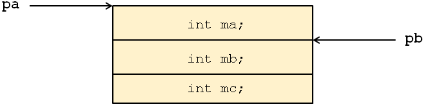
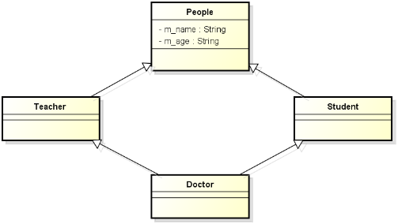

1，C++ 中是否允许一个类继承自多个父类？
1，可以；
2，这种情况就是多重继承；
3，多重继承的表象就是一个类有多个父类；
4，这是 C++ 非常特别的一个特性，在其他的程序设计语言中比如 C#、Java、Object Pascal 中都只支持单重继承；
2，C++ 支持编写多重继承的代码：
1，一个子类可以拥有多个父类；
2，子类拥有所有父类的成员变量；
3，子类继承所有父类的成员函数；
4，子类对象可以当作任意父类对象使用；
3，多重继承的语法规则：
1，代码示例：
1 class Derived : public BaseA, public BaseB, public BaseC
2 {
3 // ...
4 };2，多重继承的本质与单继承相同；
4，多重继承问题一编程实验：
1 #include <iostream>
2 #include <string>
3
4 using namespace std;
5
6 class BaseA
7 {
8 int ma;
9
10 public:
11 BaseA(int a)
12 {
13 ma = a;
14 }
15
16 int getA()
17 {
18 return ma;
19 }
20 };
21
22 class BaseB
23 {
24 int mb;
25
26 public:
27 BaseB(int b)
28 {
29 mb = b;
30 }
31
32 int getB()
33 {
34 return mb;
35 }
36 };
37
38 class Derived : public BaseA, public BaseB
39 {
40 int mc;
41
42 public:
43 Derived(int a, int b, int c) : BaseA(a), BaseB(b) // 初始化列表中同时调用父类的构造函数；
44 {
45 mc = c;
46 }
47
48 int getC()
49 {
50 return mc;
51 }
52
53 void print()
54 {
55 cout << "ma = " << getA() << ", "
56 << "mb = " << getB() << ", "
57 << "mc = " << mc << endl;
58 }
59 };
60
61 int main()
62 {
63 cout << "sizeof(Derived) = " << sizeof(Derived) << endl; // 12
64
65 Derived d(1, 2, 3);
66
67 d.print();
68
69 cout << "d.getA() = " << d.getA() << endl; // 1
70 cout << "d.getB() = " << d.getB() << endl; // 2
71 cout << "d.getC() = " << d.getC() << endl; // 3
72
73 cout << endl;
74
75 BaseA* pa = &d;
76 BaseB* pb = &d;
77
78 cout << "pa->getA() = " << pa->getA() << endl; // 1
79 cout << "pb->getB() = " << pb->getB() << endl; // 2
80
81 cout << endl;
82
83 void* paa = pa;
84 void* pbb = pb;
85
86
87 if( paa == pbb )
88 {
89 cout << "Pointer to the same object!" << endl;
90 }
91 else
92 {
93 cout << "Error" << endl; // 打印 Error；
94 }
95
96 cout << "pa = " << pa << endl; // 0xbfe7e304
97 cout << "pb = " << pb << endl; // 0xbfe7e308
98 cout << "paa = " << paa << endl; // 0xbfe7e304
99 cout << "pbb = " << pbb << endl; // 0xbf7e308
100
101 return 0;
102 }
5，通过多重继承得到的对象可能拥有“不同地址”：
1，解决方案：无；
2，多重继承成员变量排布：

1，指向同一个对象的不同位置；
2，不方便开发了，因为我们一般比较这两个指针是否相同来判断是否指向同一个对象；
3，这里两个地址值不同依然可能指向同一个对象，情况变得非常复杂；
6，多重继承可能产生冗余的成员：

1，Doctor 这个类有两个 m_name，两个 m_age；
7，多重继承问题二编程实验：
1，描述 本文6 中类图：
1 #include <iostream>
2 #include <string>
3
4 using namespace std;
5
6 class People
7 {
8 string m_name;
9 int m_age;
10 public:
11 People(string name, int age)
12 {
13 m_name = name;
14 m_age = age;
15 }
16 void print()
17 {
18 cout << "Name = " << m_name << ", "
19 << "Age = " << m_age << endl;
20 }
21 };
22
23 class Teacher : virtual public People
24 {
25 public:
26 Teacher(string name, int age) : People(name, age)
27 {
28 }
29 };
30
31 class Student : virtual public People
32 {
33 public:
34 Student(string name, int age) : People(name, age)
35 {
36 }
37 };
38
39 class Doctor : public Teacher, public Student
40 {
41 public:
42 Doctor(string name, int age) : Teacher(name, age + 1), Student(name, age), People(name, age)
43 { // 如果在这里没有调用 People(name, age)，编译器会在这一样显示如下错误：
44 // error: no matching function for call to 'People::People()'
45 // note: candidates are: People::People(std::string, int) 这是在父类构造的一行；
46 } // note: People::People(const People&) ，这个编译器提供，在类最开始那一行；
47 };
48
49 int main()
50 {
51 Doctor d("Delphi", 33);
52
53 d.print(); // 未有虚继承时，编译器显示：error: request for member 'print' is ambiguous
54 // error: candidates are: void People::print()
55 // error: void People::print()
56 /* 未有虚继承时，可以这样分作用域分辨符来继承 */
57 d.Teacher::print(); // Name = Delphi, Age = 33；
58 d.Student::print(); // Name = Delphi, Age = 33；
59
60 return 0;
61 }
8，多重继承关系出现闭合时将产生数据冗余的问题：
1，解决方案：虚继承；
2，代码示例：
1 class People {};
2 class Teacher : virtual public People {};
3 class Student : virtual public People {};
4 class Doctor : public Teacher, public Student {};
9，多重继承的问题二：
1，虚继承能够解决数据冗余问题；
2，中间层父类不再关心顶层父类的初始化；
1，规则不清晰；
2，当今的软件产品，动则几十万行代码，业务逻辑已经很复杂了，我们希望编程语言越简单越好，不希望几套标准，这样的话，只会造成生成效率的低下和致命的 bug；
3，工程中可能是很多层继承，这样找的很麻烦，可以几班解决；
3，最终子类必须直接调用顶层父类的构造函数；
10，问题：
1，当架构设计需要继承时，无法确定使用直接继承还是虚继承；
1，开发者感觉增加了开发时间；
2，架构设计时，无法知道开发者是否会多重继承；
3，都做成虚继承的时候，多重继承加虚继承太过复杂，影响效率和移植性（不同编译器可能有不同实现方式）；
4，多重继承只适合学术研究，工程一般不使用；
11，小结：
1，C++ 支持多重继承的编程方式；
1，除了 C++ 支持多重继承，基本上其它语言并不支持；
2，多重继承容易带来问题：
1，可能出现“同一个对象的地址不同”的情况；
2，虚继承可以解决数据冗余的问题；
3，虚继承使得架构设计可能出现问题；